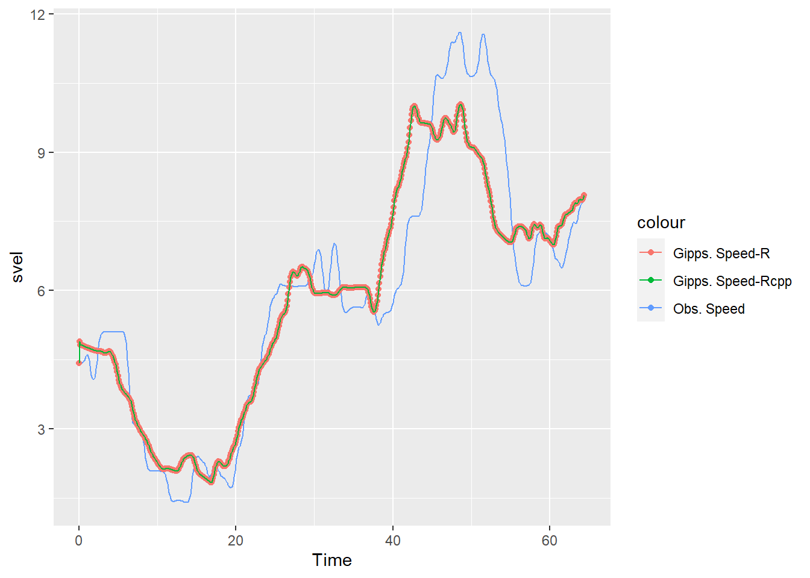
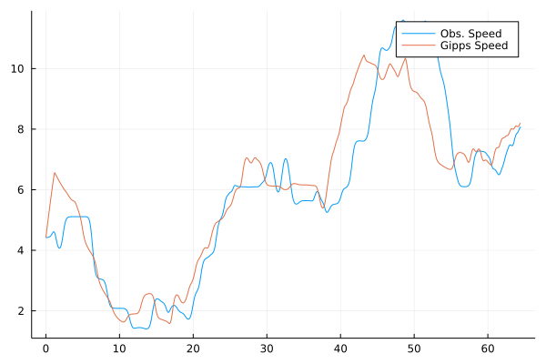
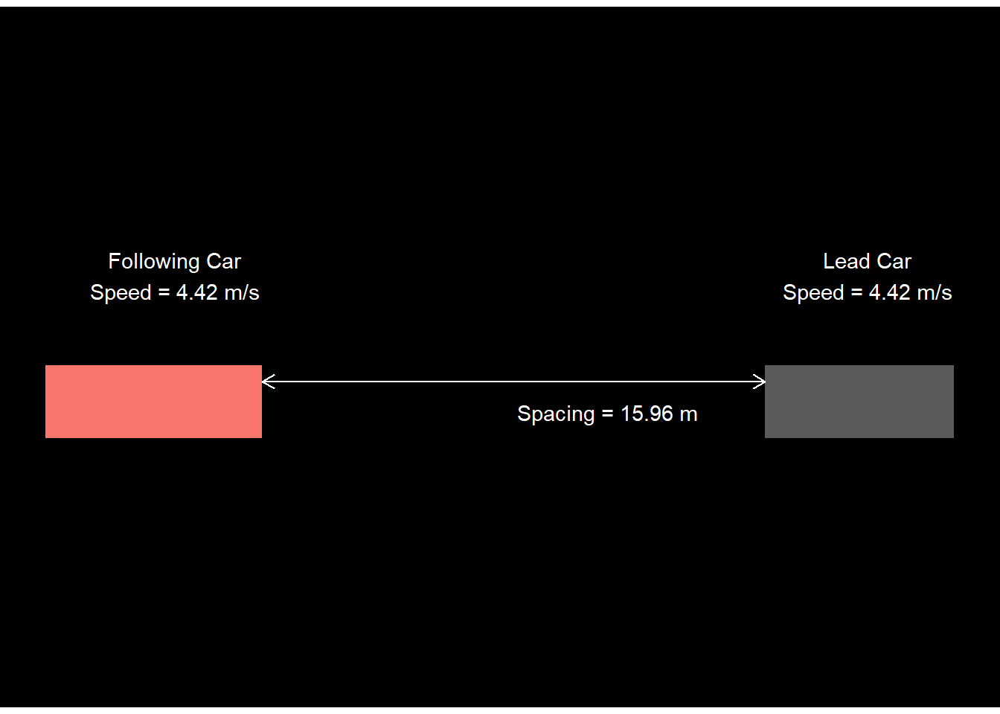

simulate_gipps_r <- function(resolution, N, dfn1,
xn1, vn1, xn_first, vn_first, ln, an,
Vn, tau, bn_const, bcap) {
####### Time #############################################
# Last time frame of the simulation:
last_time <- (nrow(dfn1) - 1) * resolution
# Time vector:
Time <- seq(from = 0, to = last_time, by = resolution)
# Length of the Time vector
time_length <- length(Time)
list_of_N_veh <- vector(mode = "list", length = N)
for (n in seq_along(list_of_N_veh)) {
####### Assign names to Lead Vehicle Parameters ##########
if (n == 1L) {
# Lead vehicle position
xn1 <- dfn1[[xn1]]
# Lead vehicle speed
vn1 <- dfn1[[vn1]]
}
ln1 <- ln[[n]]
####### Allocate Vectors ##################################
# free-flow speed
vn_ff <- rep(NA_real_, time_length)
# car-following speed
vn_cf <- rep(NA_real_, time_length)
# speed
vn <- rep(NA_real_, time_length)
# position
xn <- rep(NA_real_, time_length)
# spacing
sn <- rep(NA_real_, time_length)
# speed difference
deltav <- rep(NA_real_, time_length)
# acceleration rate
bn <- rep(NA_real_, time_length)
######## Initial values for Following vehicle ##################################
# speed
vn_ff[1] <- vn_first[[n]]
vn_cf[1] <- vn_first[[n]]
vn[1] <- vn_first[[n]]
# position
xn[1] <- xn_first[[n]]
# spacing
sn[1] <- xn1[1] - xn_first[[n]]
# speed difference
deltav[1] <- vn_first[[n]] - vn1[1]
###### Gipps Calculations ############################
for (t in 2:(time_length - 1)) {
## free flow
vn_ff[t] <- vn[t - 1] +
(2.5 * an * tau * (1 - (vn[t - 1]) / Vn)) * ((0.025 + (vn[t - 1] / Vn))^(0.5))
## car following
bcap_part_cf <- (((vn1[t - 1])^2) / bcap)
vn_cf[t] <- (bn_const * tau) +
sqrt(
((bn_const^2) * (tau^2)) - (bn_const * (2 * (xn1[t - 1] - ln1 - xn[t - 1]) - (vn[t - 1] * tau) - bcap_part_cf))
)
## gipps speed
if (is.na(vn1[t - 1])) {
vn[t] <- vn_ff[t]
} else {
vn[t] <- min(vn_ff[t], vn_cf[t])
}
### if the speed is negative, make it zero
vn[t] <- ifelse(vn[t] < 0, 0, vn[t])
## acceleration
bn[t - 1] <- (vn[t] - vn[t - 1]) / (resolution)
## position
xn[t] <- xn[t - 1] + (vn[t - 1] * resolution) + (0.5 * bn[t - 1] * (resolution)^2)
# spacing
sn[t] <- xn1[t] - xn[t] - ln1
# speed difference
deltav[t] <- vn[t] - vn1[t]
}
# ################## Result in a dataframe ###################################
result_dfn <- data.frame(fvn = n, Time, xn1, vn1, ln1, bcap, bn, xn, vn_ff, vn_cf, vn, sn, deltav)
list_of_N_veh[[n]] <- result_dfn
xn1 <- xn
vn1 <- vn
}
result <- do.call("rbind", list_of_N_veh)
return(result)
}Gipps Model in R, Rcpp, and Julia
Race against time
Introduction
Car-following behaviour refers to the motion of a vehicle that follows another vehicle in the same lane. Generally, car-following models are used in simulation software that provide other models as well (e.g., lane change model). However, to understand the outputs of a model, it is a good idea to run the model in a programming environment in isolation. This blog post is about running a car-following model - Gipps car-following model (Gipps 1981)- in R and Julia programming languages.
The equation for Gipps model is shown below. To learn more, see this wikipedia article. You may also be interested in listening to Dr. Martin Treiber’s lecture on Gipps model (see the right bar).
v_n(t+\tau) = {min} \biggl\{v_n(t) + 2.5 a_n\tau (1-v_n(t)/V_n){(0.025+v_n(t)/V_n)}^{1/2}, \\ ~~~~~~~~~~~~~~~~~~~~~~~~~~~~~ b_n\tau+\sqrt{b_n^2\tau^2 -b_n [ 2[x_{n-1}(t)-s_{n-1}-x_n(t)] - v_n(t)\tau- v_{n-1}(t)^2\hat{b}]}\biggr\}
In the following sections, I will define and apply the functions for Gipps model in both R and Julia. Julia is a fast programming language and could be a good environment to implement car-following models for numerical simulations and calibration. But I am pretty new to using Julia, so I write R first and then convert the syntax to Julia. You will see side by side code for both.
Load libraries
R
library(tidyverse)
library(microbenchmark)
Julia
using CSV
using DataFrames
using BenchmarkToolsLoad Data
I have a dataset in a csv file that contains the positions and speeds of a car following another car (based on the cleaned I80 data from Montanino and Punzo 2015). I load this csv file separately in both R and Julia
R
dfn1_r <- read_csv("dfn1.csv") %>% select(-X1)
head(dfn1_r, 3)# A tibble: 3 x 9
Vehicle.ID Time Local.Y PrecVehLocalY svel PrecVe~1 dV frspa~2 PrecV~3
<dbl> <dbl> <dbl> <dbl> <dbl> <dbl> <dbl> <dbl> <dbl>
1 11 0 50.2 66.2 4.42 4.42 -0.00292 11.6 4.36
2 11 0.1 50.6 66.6 4.42 4.42 -0.00103 11.6 4.36
3 11 0.2 51.1 67.1 4.42 4.42 0.00108 11.6 4.36
# ... with abbreviated variable names 1: PrecVehVel, 2: frspacing,
# 3: PrecVehLength
Julia
dfn1_julia = DataFrame(CSV.File("dfn1.csv"));
dfn1_julia = select!(dfn1_julia, Not(:Column1));
first(dfn1_julia, 3)3×9 DataFrame
Row │ Vehicle.ID Time Local.Y PrecVehLocalY svel PrecVehVel dV ⋯
│ Int64 Float64 Float64 Float64 Float64 Float64 Float ⋯
─────┼──────────────────────────────────────────────────────────────────────────
1 │ 11 0.0 50.2051 66.1681 4.42008 4.423 -0.00 ⋯
2 │ 11 0.1 50.6473 66.6105 4.42202 4.42305 -0.00
3 │ 11 0.2 51.0897 67.0528 4.42416 4.42308 0.00
3 columns omittedDefining the function for Gipps Model
Following is my implementation of functions for the Gipps model. I won’t go into the details of each line in the functions. Feel free to reach out if you have any questions/suggestions to improve these functions.
Note that I also implemented another function in R where I re-wrote the for loop as a function in Rcpp. Again, the reason is to speed up the calculations.
function simulate_gipps_julia(resolution, N, dfn1,
xn1, vn1, xn_first, vn_first, ln, an,
Vn, tau, bn_const, bcap)
####### Time #############################################
# Last time frame of the simulation:
last_time = (nrow(dfn1) - 1) * resolution
# Time vector:
Time = collect( range(0, stop = last_time, step = resolution) )
# Length of the Time vector
time_length = length(Time)
list_of_N_veh = Vector{Union{DataFrame, Missing}}(missing, N)
# sizehint!(list_of_N_veh, N)
for n in 1:length(list_of_N_veh)
####### Assign names to Lead Vehicle Parameters ##########
if (n == 1)
# Lead vehicle position
xn1 = dfn1[!, xn1]
# Lead vehicle speed
vn1 = dfn1[!, vn1]
end
ln1 = ln[n]
####### Allocate Vectors ##################################
# free-flow speed
vn_ff = Vector{Union{Float64, Missing}}(missing, time_length)
# car-following speed
vn_cf = Vector{Union{Float64, Missing}}(missing, time_length)
# speed
vn = Vector{Union{Float64, Missing}}(missing, time_length)
# position
xn = Vector{Union{Float64, Missing}}(missing, time_length)
# spacing
sn = Vector{Union{Float64, Missing}}(missing, time_length)
# speed difference
deltav = Vector{Union{Float64, Missing}}(missing, time_length)
# acceleration rate
bn = Vector{Union{Float64, Missing}}(missing, time_length)
######## Initial values for Following vehicle ##################################
# speed
vn_ff[1] = vn_first[n]
vn_cf[1] = vn_first[n]
vn[1] = vn_first[n]
# position
xn[1] = xn_first[n]
# spacing
sn[1] = xn1[1] - xn_first[n]
# speed difference
deltav[1] = vn_first[n] - vn1[1]
###### Gipps Calculations ############################
for t in 2:(time_length-1)
## free flow
vn_ff[t] = vn[t-1] + (2.5 * an * tau * (1 - (vn[t-1])/Vn)) * ((0.025 + (vn[t-1]/Vn))^(0.5))
## car following
bcap_part_cf = (((vn1[t-1])^2)/bcap)
vn_cf[t] = (bn_const * tau) + sqrt(((bn_const^2) * (tau^2)) - (bn_const * (2 * (xn1[t-1] - ln1 - xn[t-1]) - (vn[t-1] * tau) - bcap_part_cf)))
## gipps speed
if (ismissing.(vn1[t-1]))
vn[t] = vn_ff[t]
else
vn[t] = min(vn_ff[t], vn_cf[t] )
end
### if the speed is negative, make it zero
vn[t] = ifelse(vn[t] < 0, 0, vn[t])
## acceleration
bn[t-1] = (vn[t] - vn[t-1])/(resolution)
## position
xn[t] = xn[t-1] + (vn[t-1] * resolution) + (0.5 * bn[t-1] * (resolution)^2)
# spacing
sn[t] = xn1[t] - xn[t] - ln1
# speed difference
deltav[t] = vn[t] - vn1[t]
end
# ################## Result in a dataframe ###################################
result_dfn = DataFrame(fvn=n, Time =Time, xn1=xn1, vn1=vn1, ln1=ln1, bn=bn, xn=xn, vn=vn, sn=sn, deltav=deltav)
list_of_N_veh[n] = result_dfn
xn1 = xn
vn1 = vn
end
result = reduce(vcat, list_of_N_veh)
return result
endsimulate_gipps_julia (generic function with 1 method)#include <cmath>
#include <Rcpp.h>
using namespace Rcpp;
// [[Rcpp::export]]
DataFrame for_loop_gipps(double resolution,
int n,
int time_length,
double tau,
double an,
double bn_const,
double Vn,
double bcap,
double ln1,
NumericVector Time,
NumericVector vn_ff,
NumericVector vn_cf,
NumericVector vn,
NumericVector vn1,
NumericVector sn,
NumericVector xn,
NumericVector xn1,
NumericVector deltav,
NumericVector bn
) {
for(int t = 1; t < (time_length-1); t++) {
// ## free flow
vn_ff[t] = vn[t-1] + (2.5 * an * tau * (1 - (vn[t-1])/Vn)) * ((0.025 + pow((vn[t-1]/Vn), 0.5)));
// if (Rcpp::NumericVector::is_na(vn1[t-1])) {
//
// vn1[t-1] = 0;
//
// } else {
//
// vn1[t-1] = vn1[t-1];
//
// }
// ## car following
vn_cf[t] = (bn_const * tau) + sqrt(
(pow(bn_const,2) * pow(tau,2)) - (bn_const * (2 * (xn1[t-1] - ln1 - xn[t-1]) - (vn[t-1] * tau) - (pow((vn1[t-1]),2)/bcap)))
);
// ## gipps speed
if (Rcpp::NumericVector::is_na(vn1[t-1])){
vn[t] = vn_ff[t];
} else {
if (vn_ff[t] < vn_cf[t]){
vn[t] = vn_ff[t];
} else {
vn[t] = vn_cf[t];
}
}
// ### if the speed is negative, make it zero
if (vn[t] < 0) {
vn[t] = 0;
} else {
vn[t] = vn[t];
}
// ## acceleration
bn[t-1] = (vn[t] - vn[t-1])/(resolution);
// ## position
xn[t] = xn[t-1] + (vn[t-1] * resolution) + (0.5 * bn[t-1] * pow(resolution, 2));
// # spacing
sn[t] = xn1[t] - xn[t];
// # speed difference
deltav[t] = vn[t] - vn1[t];
}
DataFrame df = DataFrame::create(Named("fvn") = n,
Named("Time") = Time,
Named("xn1") = xn1,
Named("vn1") = vn1,
Named("ln1") = ln1,
Named("bn") = bn,
Named("xn") = xn,
Named("vn") = vn,
Named("sn") = sn,
Named("deltav") = deltav,
Named("vn_ff") = vn_ff,
Named("vn_cf") = vn_cf);
return df;
}simulate_gipps_rcpp <- function(
############## Simulation Parameters #######################
resolution, # Duration of a time frame. Typical values are 0.1, 0.5, 1.0 s. Double. Must match with the resolution of the observed lead vehicle data dfn1
N, # Number of Following Vehicles in the same lane (platoon). Integer.
############### Lead Vehicle Data #########################
dfn1, # Name (unquoted) of the dataframe that contains lead vehicle data.
xn1, # Name of the column in dfn1 that contains lead vehicle position. Character.
vn1, # Name of the column in dfn1 that contains lead vehicle speed. Character.
############### Following Vehicle Data ####################
xn_first, # First value of vehicle position of each of the following vehicles. A list of doubles with size equal to N.
vn_first, # First value of vehicle speed of each of the following vehicles. A list of doubles with size equal to N.
ln, # Effective size of each of the lead vehicles i.e. vehicle length plus margin of safety. A list of doubles with size equal to N.
############### Model Parameters ##########################
an, # Maximum acceleration which the driver wishes to undertake m/s2. Double.
Vn, # Desired speed/speed at which driver wishes to travel m/s. Double.
tau, # Reaction Time s. Double.
bn_const, # Most severe braking that the driver wishes to undertake m/s2. Double and Negative.
bcap # An estimate of lead vehicle deceleration m/s2. Double and Negative.
) {
####### Time #############################################
# Last time frame of the simulation:
last_time <- (nrow(dfn1) - 1) * resolution
# Time vector:
Time <- seq(from = 0, to = last_time, by = resolution)
# Length of the Time vector
time_length <- length(Time)
list_of_N_veh <- vector(mode = "list", length = N)
for (n in seq_along(list_of_N_veh)) {
####### Assign names to Lead Vehicle Parameters ##########
if (n == 1L) {
# Lead vehicle position
xn1 <- dfn1[[xn1]]
# Lead vehicle speed
vn1 <- dfn1[[vn1]]
}
ln1 <- ln[[n]]
####### Allocate Vectors ##################################
# free-flow speed
vn_ff <- rep(NA_real_, time_length)
# car-following speed
vn_cf <- rep(NA_real_, time_length)
# speed
vn <- rep(NA_real_, time_length)
# position
xn <- rep(NA_real_, time_length)
# spacing
sn <- rep(NA_real_, time_length)
# speed difference
deltav <- rep(NA_real_, time_length)
# acceleration rate
bn <- rep(NA_real_, time_length)
######## Initial values for Following vehicle ##################################
# speed
vn_ff[1] <- vn_first[[n]]
vn_cf[1] <- vn_first[[n]]
vn[1] <- vn_first[[n]]
# position
xn[1] <- xn_first[[n]]
# spacing
sn[1] <- xn1[1] - xn_first[[n]]
# speed difference
deltav[1] <- vn_first[[n]] - vn1[1]
###### Gipps Calculations ############################
result_dfn <- for_loop_gipps(resolution,
n,
time_length,
tau,
an,
bn_const,
Vn,
bcap,
ln1,
Time,
vn_ff,
vn_cf,
vn,
vn1,
sn,
xn,
xn1,
deltav,
bn
)
################## Result in a dataframe ###################################
list_of_N_veh[[n]] <- result_dfn
xn1 <- result_dfn$xn
vn1 <- result_dfn$vn
}
result <- do.call("rbind", list_of_N_veh)
# return the result dataframe
return(result)
}Running the function on data
The functions are defined above. Let’s run them now with the data of a single car-following pair.
result_r <- simulate_gipps_r(0.1,
1,
dfn1_r,
'PrecVehLocalY',
'PrecVehVel',
list(dfn1_r$Local.Y[1]),
list(dfn1_r$svel[1]),
list(unique(dfn1_r$PrecVehLength)),
2,
max(dfn1_r$svel),
1.2,
-1.5,
-2)
head(result_r, 3) fvn Time xn1 vn1 ln1 bcap bn xn vn_ff vn_cf
1 1 0.0 66.16815 4.42300 4.3591 -2 4.708065444 50.20508 4.420080 4.420080
2 1 0.1 66.61045 4.42305 4.3591 -2 -0.688704077 50.67063 6.786645 4.890887
3 1 0.2 67.05276 4.42308 4.3591 -2 -0.004409401 51.15627 7.210242 4.822016
vn sn deltav
1 4.420080 15.96307 -0.0029200
2 4.890887 11.58072 0.4678365
3 4.822016 11.53739 0.3989361result_rcpp <- simulate_gipps_rcpp(0.1,
1,
dfn1_r,
'PrecVehLocalY',
'PrecVehVel',
list(dfn1_r$Local.Y[1]),
list(dfn1_r$svel[1]),
list(unique(dfn1_r$PrecVehLength)),
2,
max(dfn1_r$svel),
1.2,
-1.5,
-2)
head(result_rcpp, 3) fvn Time xn1 vn1 ln1 bn xn vn sn
1 1 0.0 66.16815 4.42300 4.3591 4.708065444 50.20508 4.420080 15.96307
2 1 0.1 66.61045 4.42305 4.3591 -0.688704077 50.67063 4.890887 15.93982
3 1 0.2 67.05276 4.42308 4.3591 -0.004409401 51.15627 4.822016 15.89649
deltav vn_ff vn_cf
1 -0.0029200 4.420080 4.420080
2 0.4678365 6.805472 4.890887
3 0.3989361 7.231150 4.822016result_julia = simulate_gipps_julia(
0.1,
1,
dfn1_julia,
"PrecVehLocalY",
"PrecVehVel",
Vector([dfn1_julia[!,"Local.Y"][1]]),
Vector([dfn1_julia.svel[1]]),
Vector(unique(dfn1_julia.PrecVehLength)),
2,
maximum(dfn1_julia.svel),
0.1,
-1.5,
-2
);
first(result_julia, 3)3×10 DataFrame
Row │ fvn Time xn1 vn1 ln1 bn xn vn ⋯
│ Int64 Float64 Float64 Float64 Float64 Float64? Float64? Float64? ⋯
─────┼──────────────────────────────────────────────────────────────────────────
1 │ 1 0.0 66.1681 4.423 4.3591 1.97214 50.2051 4.42008 ⋯
2 │ 1 0.1 66.6105 4.42305 4.3591 1.95774 50.6569 4.61729
3 │ 1 0.2 67.0528 4.42308 4.3591 1.94046 51.1285 4.81307
2 columns omittedPlotting the results
Following plots compare the speed predicted by the Gipps model with the observed speed of the following vehicle.
R
ggplot() +
geom_line(data = dfn1_r,
aes(Time, svel, color="Obs. Speed")) +
geom_point(data = result_r %>% filter(fvn==1),
aes(Time, vn, color="Gipps. Speed-R")) +
geom_line(data = result_rcpp %>% filter(fvn==1),
aes(Time, vn, color="Gipps. Speed-Rcpp"))
Julia
using Plots
p = plot(dfn1_julia.Time, dfn1_julia.svel, label="Obs. Speed");
plot!(p, result_julia.Time, result_julia.vn, label = "Gipps Speed")
Measuring the running time
Since the main reason for using Julia and Rcpp was to speed-up the calculations, I now benchmark the code running time:
R
microbenchmark(
"R" = simulate_gipps_r(0.1,
1,
dfn1_r,
'PrecVehLocalY',
'PrecVehVel',
list(dfn1_r$Local.Y[1]),
list(dfn1_r$svel[1]),
list(unique(dfn1_r$PrecVehLength)),
2,
max(dfn1_r$svel),
1.2,
-1.5,
-2),
"Rcpp" = simulate_gipps_rcpp(0.1,
1,
dfn1_r,
'PrecVehLocalY',
'PrecVehVel',
list(dfn1_r$Local.Y[1]),
list(dfn1_r$svel[1]),
list(unique(dfn1_r$PrecVehLength)),
2,
max(dfn1_r$svel),
1.2,
-1.5,
-2),
times = 1000L,
unit = "ms"
)Unit: milliseconds
expr min lq mean median uq max neval
R 5.2794 5.71390 6.440167 6.05135 6.52950 38.2684 1000
Rcpp 1.2979 1.46895 1.780119 1.55145 1.75615 14.1584 1000
Julia
@benchmark simulate_gipps_julia(
0.1,
1,
dfn1_julia,
"PrecVehLocalY",
"PrecVehVel",
Vector([dfn1_julia[!,"Local.Y"][1]]),
Vector([dfn1_julia.svel[1]]),
Vector(unique(dfn1_julia.PrecVehLength)),
2,
maximum(dfn1_julia.svel),
0.1,
-1.5,
-2
)BenchmarkTools.Trial: 4286 samples with 1 evaluation.
Range (min … max): 941.700 μs … 5.675 ms ┊ GC (min … max): 0.00% … 78.73%
Time (median): 1.056 ms ┊ GC (median): 0.00%
Time (mean ± σ): 1.157 ms ± 389.636 μs ┊ GC (mean ± σ): 2.42% ± 6.91%
▆██▇▆▅▅▄▄▃▂▂▁▁▁ ▂
█████████████████▇▅█▇▇▆▇▇▆▄▆▄▅▃▆▄▅▅▄▃▅▅▄▁▅▃▄▄▄▅▅▁▅▁▄▃▄▄▁▃▃▃▄▄ █
942 μs Histogram: log(frequency) by time 3.25 ms <
Memory estimate: 424.88 KiB, allocs estimate: 20491.The results clearly show that both Julia and Rcpp are significantly faster than R. Therefore, using the Julia implementation would save a lot of time if I use this function in simulations and calibration.
Please leave comments below to suggest any improvements. Feel free to use the code in this post if you find anything useful.
Animation Bonus:
Code
library(gganimate)
ggplot(data = result_r) +
geom_rect(aes(xmin = xn1 - ln1,
xmax = xn1,
ymin = 0.628,
ymax = 3.028)) +
geom_rect(aes(group = fvn,
fill = as.factor(fvn),
xmin = xn - 5,
xmax = xn,
ymin = 0.628,
ymax = 3.028)) +
# geom_hline(yintercept = 3.6, linetype = "longdash", color = "white") +
geom_text(aes(x=xn-2, y = 6,
label = paste("Following Car\nSpeed =", round(vn,2), "m/s")),
color = "white") +
geom_text(aes(x=xn1-2, y = 6, color = "white",
label = paste("Lead Car\nSpeed =", round(vn1,2), "m/s")),
color = "white") +
geom_segment(aes(x = xn,
xend = xn1-(unique(dfn1_r$PrecVehLength)),
y = 2.5,
yend= 2.5), color = "white",
arrow = arrow(length = unit(0.1, "inches"), ends = "both")) +
geom_text(aes(x=xn + 0.5*sn, y = 1.5, color = "white",
label = paste("Spacing =", round(sn,2), "m")),
color = "white") +
coord_equal(ratio=0.7) +
transition_manual(Time) +
ease_aes() +
view_follow()+
theme_void() +
theme(legend.position = "none",
panel.background = element_rect(fill = "black", color = "black"))
References
Gipps, P. G. 1981. “A Behavioural Car-Following Model for Computer Simulation.” Transportation Research Part B: Methodological 15 (2): 105–11. https://doi.org/10.1016/0191-2615(81)90037-0.
Montanino, Marcello, and Vincenzo Punzo. 2015. “Trajectory Data Reconstruction and Simulation-Based Validation Against Macroscopic Traffic Patterns.” Transportation Research Part B: Methodological 80 (October): 82–106. https://doi.org/10.1016/j.trb.2015.06.010.